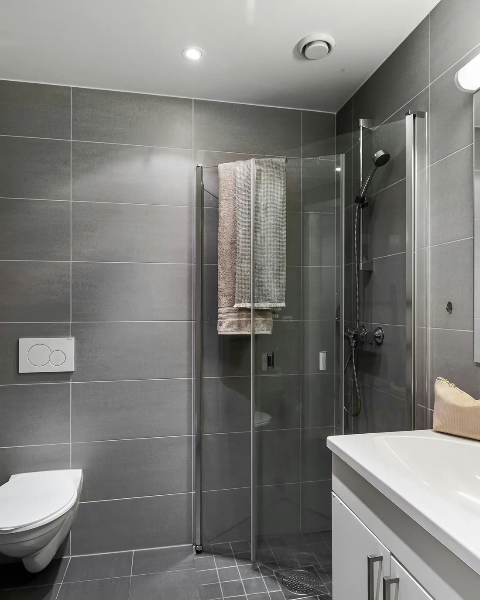
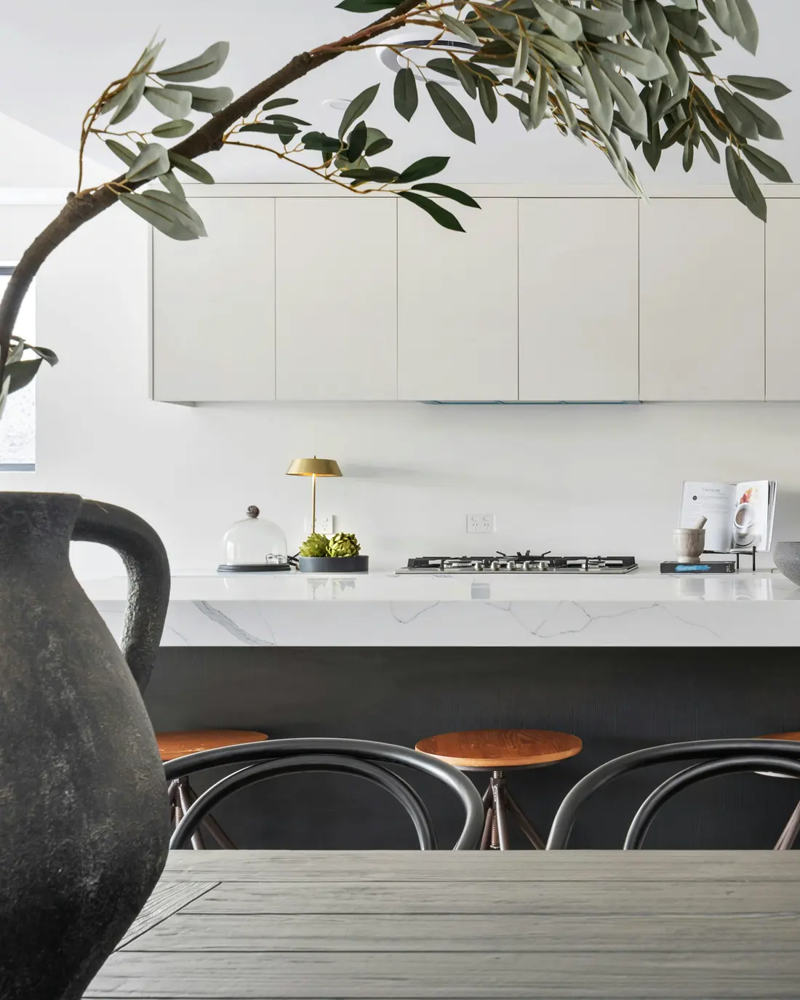
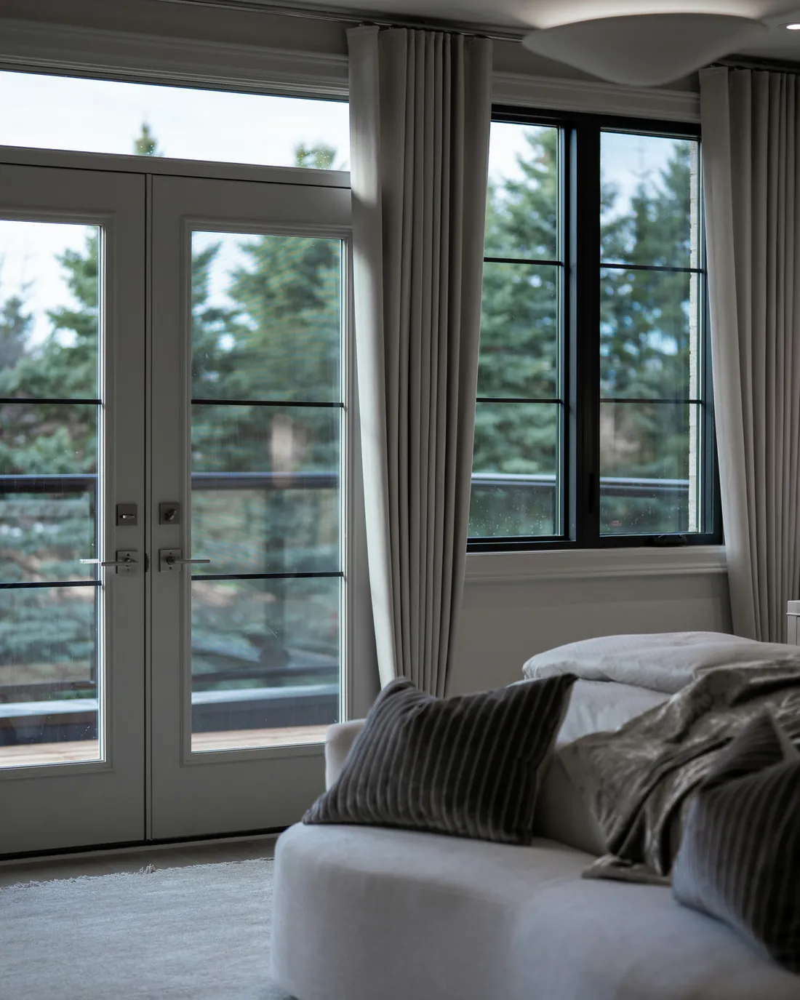

Every room we have built in 3D. Step into one, look around, and tap anything you like the look of.

Stone, brass and soft light. Fittings and finishes you can turn over before deciding they belong in yours.
Enter the room →
The room that gets used hardest. Worktops, handles and hardware, shown the way they actually sit together.
Enter the room →
Quieter, warmer, and the room people get most wrong. Lighting and textiles that decide how it feels at the end of a day.
Enter the room →